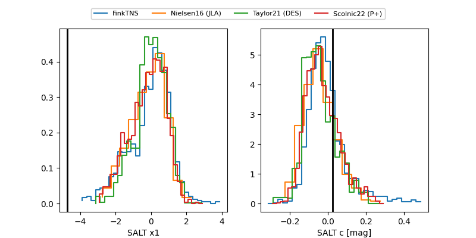

FINK: ZTF25abppwpt
Lasair: ZTF25abppwpt
ALeRCE: ZTF25abppwpt
ZTF25abppwpt (ztf,fink)
equatorial (ra, dec) = (341.4749,+3.67330)
galactic (l, b) = (73.5347,-46.80263)

last ztfg=19.46, ztfr=19.46
2 ztfg, 4 ztfr detections